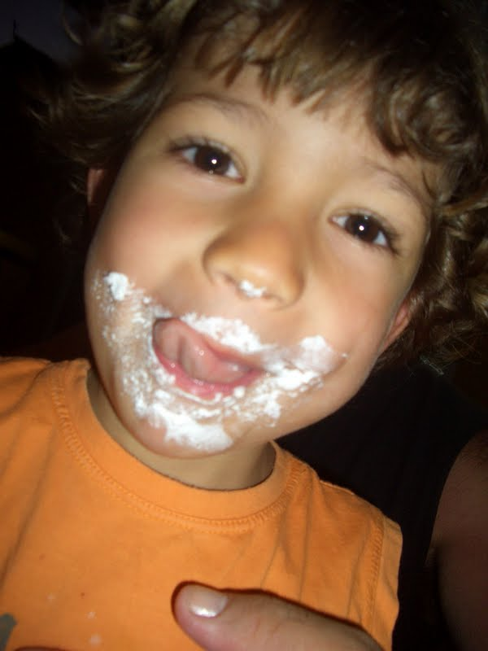
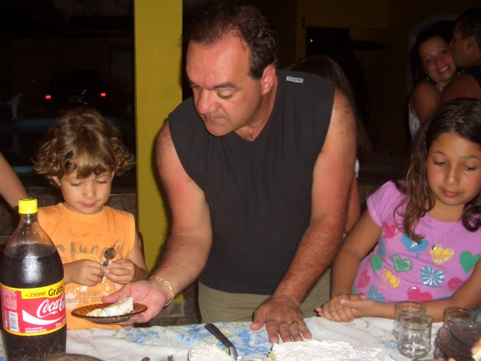
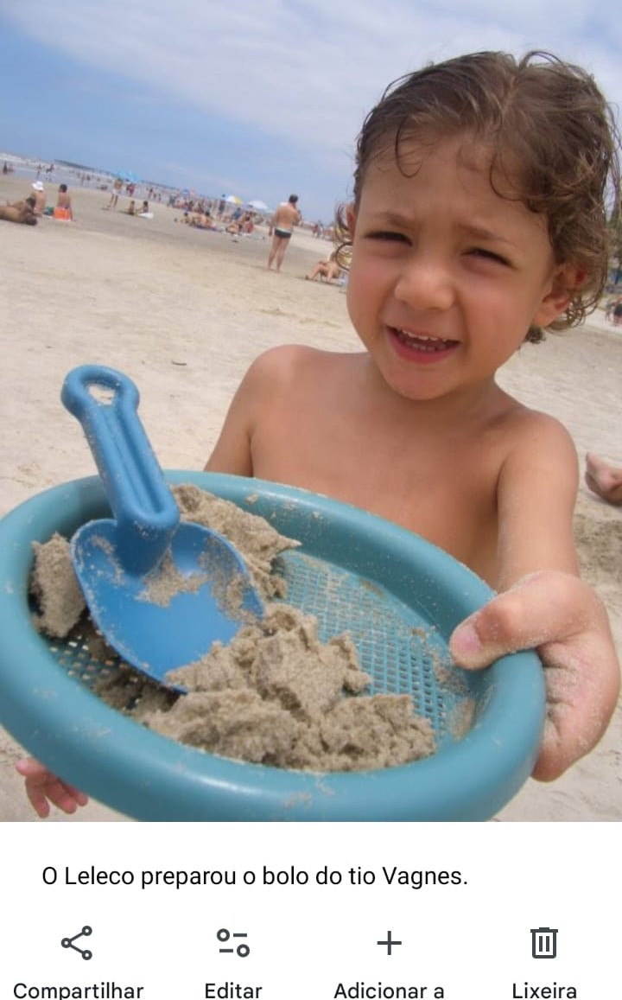

Bem vindo!
Eu sou o Leonardo Kajio Lasso e tenho cozinhado desde pequeno. Acredito que esta atividade que tanto amo é mágica, ela tem a capacidade de melhorar a vida, trazendo felicidade às pessoas de uma forma inimaginável. Pensando em partilhar isso com os outros para que possam, assim como eu, ter sua vida transformada criei este blog.
Meu relacionamento com a culinária iniciou-se ainda durante a infância, pois as reuniões familiares eram pautadas em refeições. Não só a comida, como também o ambiente de preparação, onde os familiares conversavam, contavam histórias, faziam brincadeiras, me fizeram querer participar daquilo e, portanto, querer cozinhar também.



Comecei ainda pequeno a me aventurar nos preparos mais simples, como bolos e sobremesas, que não envolviam o contato direto com o fogo. Conforme fui crescendo comecei a ajudar meus pais na cozinha, principalmente durante o final de semana, quando ficávamos todos na cozinha, meus pais e irmãs. Seja cozinhando, lavando ou arrumando estávamos todos lá conversando e passando um momento em família. Nesse ponto, já ajudava nas preparações, picando alguns vegetais e mexendo em algumas panelas. Depois de crescido comecei a fazer um pouco de tudo. Mas mesmo nesses finais de semana, sem necessariamente estar fazendo algo relacionado à cozinha, dividir esse espaço e momento com minha família é mais satisfatório do que o momento da refeição.
Notando o quão gratificante é cozinhar, principalmente quando em companhia de entes queridos, decidi produzir esse blog a fim de incentivar você a cozinhar também. Mais do que cozinhar, cozinhar com pessoas que gosta, dividindo a mesa com os seus. Sejam familiares ou amigos, o importante é cozinhar e se divertir.